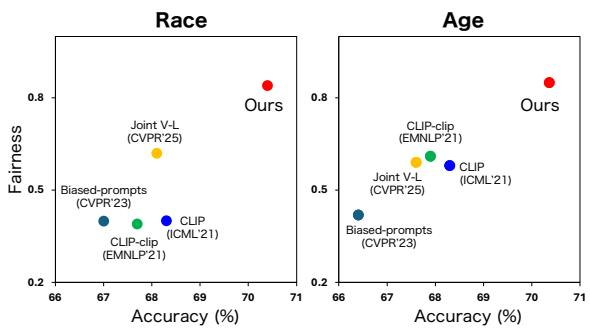

今日主线 · arXiv new; ACL 2026 Long; OpenReview/ACL ARR; CLIP/VLM test-time adaptation
Selective Test-Time Debiasing for CLIP：虽然目标是公平性，但核心机制是在不损坏通用 cross-modal alignment 的前提下选择性调节 CLIP/VLM 输出
虽然目标是公平性，但核心机制是在不损坏通用 cross-modal alignment 的前提下选择性调节 CLIP/VLM 输出。
